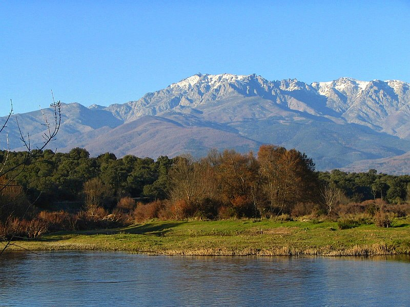
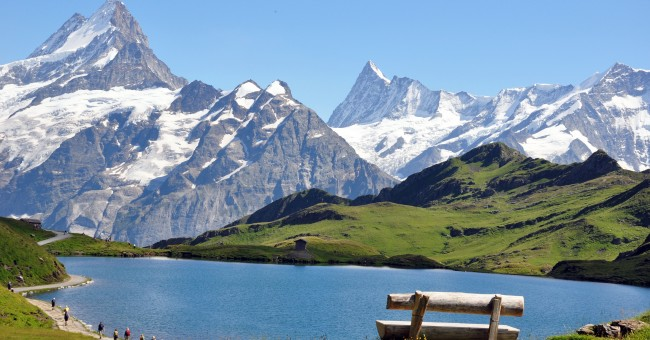
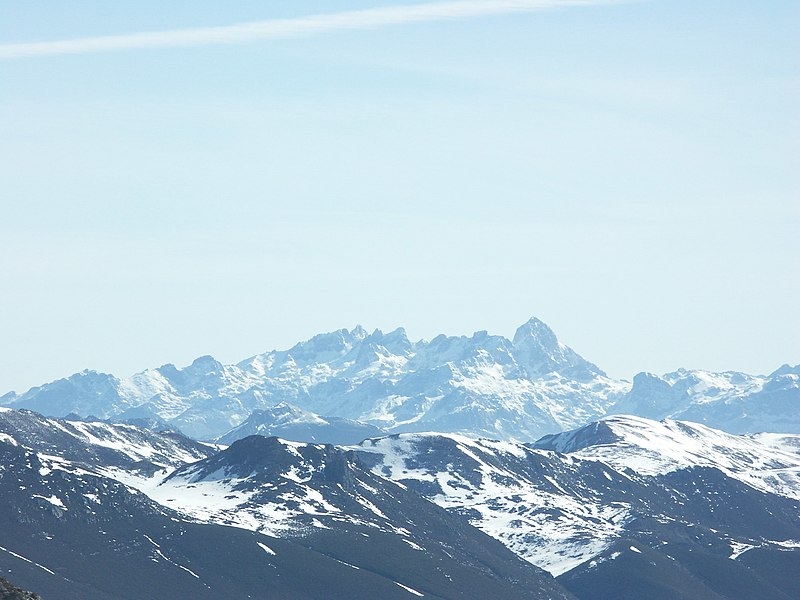

 La sierra de Gredos es una sierra perteneciente al sistema Central, en la península ibérica, situada entre las provincias españolas de Ávila, Cáceres, Madrid y Salamanca. Su máxima altitud se da en el pico Almanzor a 2592 m sobre el nivel del mar. Gredos es una de las sierras más extensas del sistema Central y en torno a sus grandes moles graníticas basculan cuatro comunidades autónomas: Castilla y León, Castilla-La Mancha, Comunidad de Madrid y Extremadura. Se extiende de este a oeste desde San Martín de Valdeiglesias a Hervás y de norte a sur del valle del Tormes a Rosarito.
 Los Pirineos o el Pirineo es un sistema montañoso situado en el noreste de la península ibérica, que hace de frontera natural entre Andorra, España y Francia. Se extiende en dirección este-oeste a lo largo de 491 km aproximadamente, desde el cabo de Creus en el mar Mediterráneo hasta su unión con la cordillera Cantábrica, donde se ha establecido la falla de Pamplona como su límite convencional geológico, no existiendo interrupción geográfica entre ambas formaciones. En su parte central tiene una anchura de unos 150 km.
 Los Picos de Europa son un macizo montañoso localizado en el norte de España que pertenece a la parte central de la cordillera Cantábrica. Aunque no es muy extenso, su cercanía al mar hace que sea pródigo en accidentes geográficos de gran interés. En la actualidad el parque nacional de los Picos de Europa constituye el segundo parque nacional más visitado de España, después del parque nacional del Teide (Tenerife). Esta formación caliza se extiende por Asturias, León y Cantabria, y en ella destacan sus alturas, en muchos casos por encima de los 2500 m s. n. m.